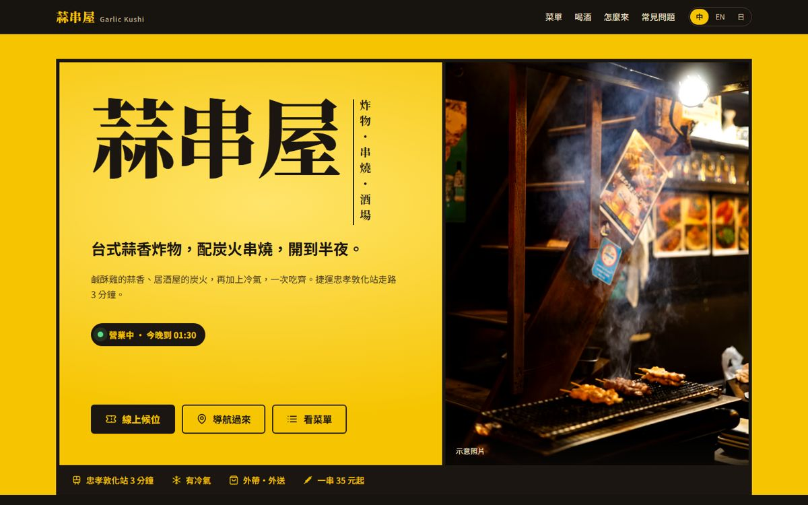
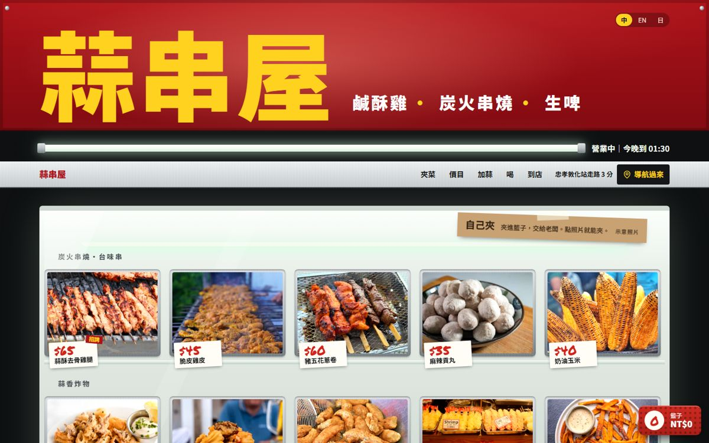
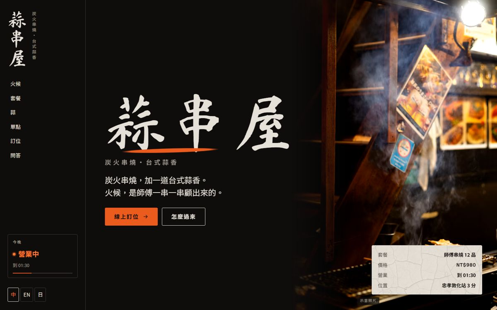

同一間店、三種說故事的方式。三版都已經上線，可以直接點進去用手機或電腦操作看看。每一版的客群、品牌故事和特色都整理在下面，選一個最像你想開的那間店。
| 第一版・招牌點菜單 | 第二版・鹹酥雞攤玻璃櫃 | 第三版・樂燒煙燻 | |
|---|---|---|---|
| 定位 | 平價、親切的串燒炸物居酒屋 | 熱鬧、好玩的台味宵夜攤 | 師傅手藝的高級炭火串燒 |
| 主要客群 | 東區上班族、學生、宵夜族 | 學生、年輕人、朋友聚會 | 約會情侶、上班族、觀光客 |
| 價格感 | 一串 35 元起・生啤暢飲 399 | 一串 35 元起・生啤暢飲 399 | 套餐 12 品 NT$980・單點 90 元起 |
| 網站最想讓客人做的事 | 知道有開、導航過來、看菜單 | 夾菜進籃子、導航過來 | 線上訂位、再導航過來 |
| 招牌互動 | 可以勾選的點菜單，自動算總價 | 點托盤飛進紅色籃子、老闆三問、號碼牌 | 往下捲，眼前那一串就在火上「燒紅」 |
| 風格關鍵字 | 黃色燈箱、手寫點菜單、親切 | 日光燈、不鏽鋼、紅籃子、台味 | 黑陶、冰裂釉、炭火橘、毛筆字 |
| 中・英・日 | ✓ | ✓ | ✓ |

台式蒜香炸物，配炭火串燒，開到半夜。
台北東區下班的上班族、學生和宵夜族。他們在手機上快速比較：現在有沒有開、離捷運多遠、一串多少錢。這一版用最直接的方式回答這三件事。
台北的夜晚有兩種香味：鹹酥雞攤起鍋前爆的那把蒜，和居酒屋炭火上滴油的串燒。以前要分兩家吃，現在放在同一張桌上。網站就像店裡那張粉紅色的複寫點菜單：紅色印刷、藍色原子筆打勾，每個台灣人都填過，一看就懂、一點就會。
想走平價、穩定經營在地熟客，網站要「清楚、好用、不花俏」的老闆。

整個網站就是一座亮著燈的鹹酥雞攤。
學生和年輕人，晚上跟朋友在外面，用手機決定下一攤去哪。他們在意 CP 值、現在有沒有開、好不好拍、值不值得分享到 IG。
每個台灣人都記得那個畫面：日光燈下的不鏽鋼玻璃櫃，拿起夾子和紅色塑膠籃，把想吃的一樣一樣夾進去，交給老闆，然後聽他問：「要辣嗎？蒜要嗎？九層塔？」蒜串屋把這個儀式原封不動搬進有冷氣的店裡，再加上居酒屋的炭火。不用在路邊流汗排隊，夾菜的樂趣一樣不少。
想做平價高流量、靠學生和社群口碑衝人氣，網站要「好玩到想截圖」的老闆。

炭火串燒，加一道台式蒜香。火候，是師傅一串一串顧出來的。
約會的情侶、想好好吃一頓的上班族，以及找台北特色燒鳥的日本與外國觀光客。客單價約 NT$600–1,000，多半會先訂位。
一串好的串燒，是一段火候的紀錄。炭燒到表面發白才開始烤；聽油滴下去的聲音決定翻面；離火靜置幾秒，讓肉汁回到中心；烤好就上，不讓它在盤子上等。在 12 品的串燒套餐中間，師傅藏了一道台灣的驚喜：鹹酥雞的蒜香與九層塔，用燒鳥的精細度重新做一次。網站的樣子取自日本樂燒：燒紅的陶器放進煙裡急冷，黑陶與冰裂釉之間，只有正在火上的東西是橘紅的。
想把店做成中高價、訂位制、適合約會和觀光客的老闆。注意：這一版的菜單與價格是另外設計的高級版本。